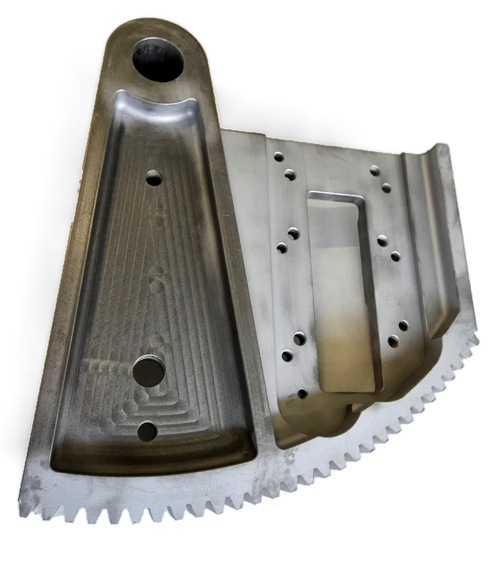
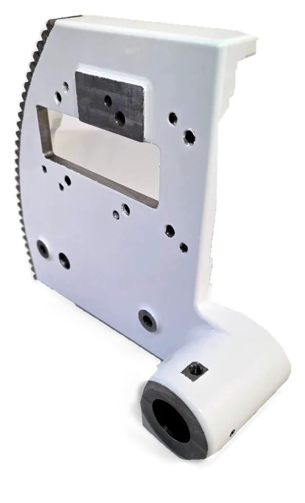
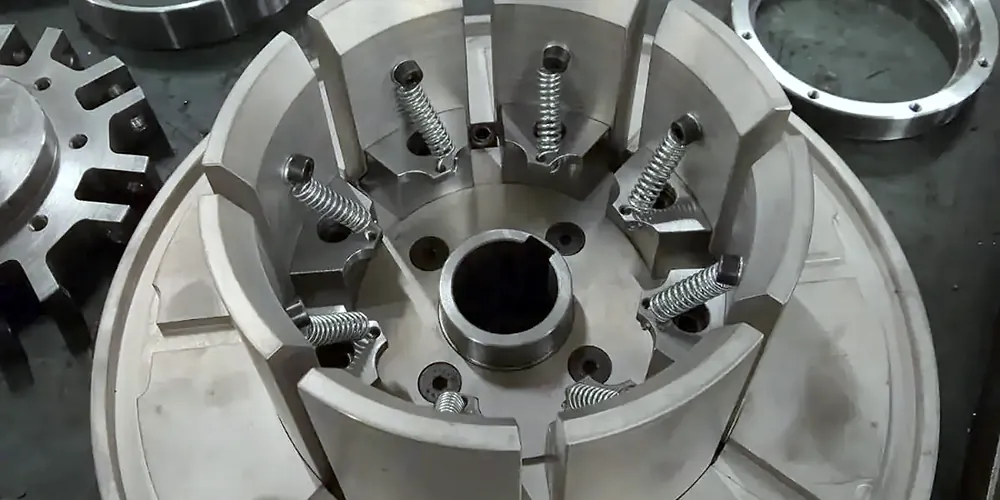
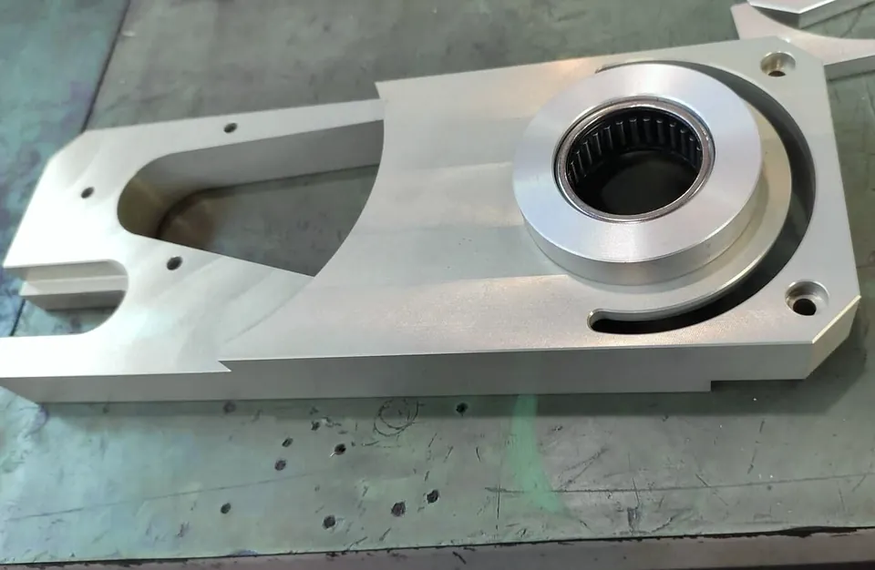
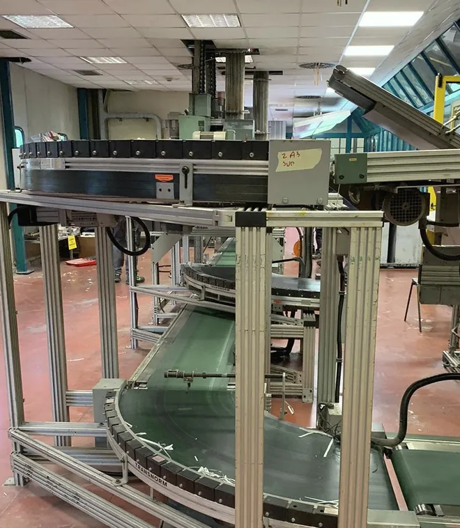
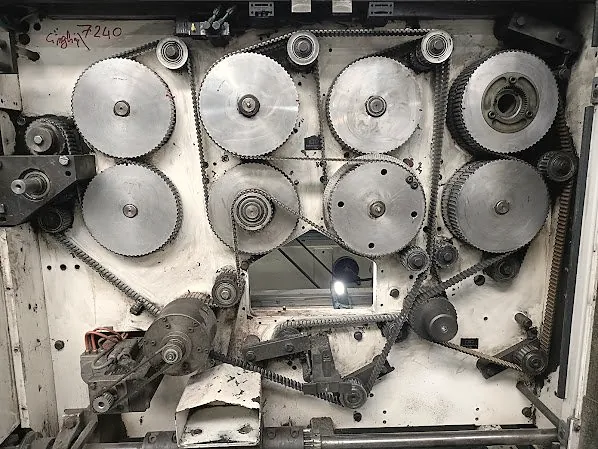
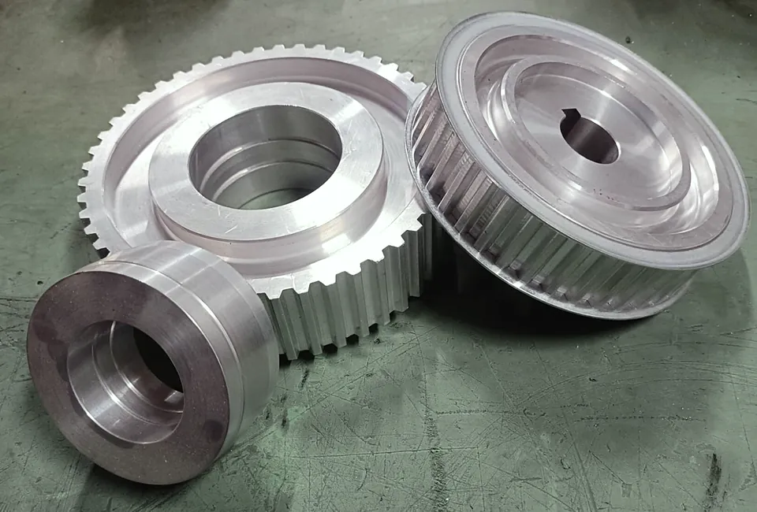

Pezzi dal pieno, su disegno
Officina meccanica a Padova: torniamo, fresiamo, pieghiamo e saldiamo su disegno, facciamo rulli per la stampa offset e flexo e, per manutenzione e installazione, veniamo noi in azienda.
Dalla stampa ai trasporti industriali
Produrre e rettificare rulli per macchine da stampa offset e flexo è una delle nostre specializzazioni più richieste. Lavoriamo anche per sacchettifici, confezionatrici e trasporti industriali.
Stampa offset e flexo
Rulli nuovi e rettificati, ricambi per rotative Man-Roland, interventi sulle macchine da stampa direttamente in azienda.
Giornali
Una linea di spedizione per i giornali appena usciti dalla rotativa.
Sacchetti e confezioni
Macchine per sacchettifici e confezionatrici; il rullo pinza della fondellatrice che chiude il fondo dei sacchi di carta.
Trasporti e automazione
Nastri trasportatori, rulli e guide. Installazione di macchine automatiche, dal montaggio al collaudo.

Dalla componente singola all'intera rotativa
Il pezzo viene programmato e lavorato internamente, senza subappaltare nulla all'esterno.
- 6 torni, 1 a CNC
Tornitura
Rulli per offset e flexo, pulegge dal pieno.
- 3 assi
Fresatura CNC
Fresatrice CNC industriale: dal blocco pieno al pezzo finito.
- da 10 cm a 3 m
Lamiera
Taglio e piegatura di acciaio, inox, alluminio.
- TIG, MIG/MAG, elettrodo
Saldatura
Saldatura professionale, in officina.
Materiali: acciaio, acciaio inossidabile, alluminio, ottone, ghisa.
Due lavori per la stampa

Supporto per il rullo silicone di una rotativa offset Man-Roland
Ricavato da un blocco pieno di lega leggera per una rotativa a quattro colori: la parte centrale alleggerita, la sede del cuscinetto a rullini montato a pressione, quattro fori di fissaggio.
Alluminio 6082 o 7075, fresatura CNC a 3 assi e tornitura
Linea di spedizione giornali
Su commessa di una delle principali aziende di produzione giornali del Veneto.
Profilati di alluminio, nastri in PVC, curve a 90°Altri lavori: pulegge dal pieno, rullo pinza per fondellatrice, svolgitore su commessa, basamento per braccio robotico.
Non chiediamo di smontare, imballare e spedire nulla: veniamo noi da voi

Come installiamo una macchina
- Analisi iniziale
- Montaggio meccanico completo
- Installazione dei sistemi automatici
- Configurazione e regolazioni
- Test e collaudo finale
Interveniamo su macchine da stampa offset e flexo, sacchettifici e confezionatrici, per aziende dal Friuli al Trentino, dall'Emilia‑Romagna al Veneto.
Un'officina che c'era ieri, c'è oggi e sarà qui domani
348 169 34 51Via dell'Artigianato 6, 35127 Padova
Dal lunedì al venerdì 8:00‑18:00
Sabato 8:00‑12:00
Chi ci chiama parla con chi lavora, e chi lavora conosce il mestiere. A Padova dal 1977.
